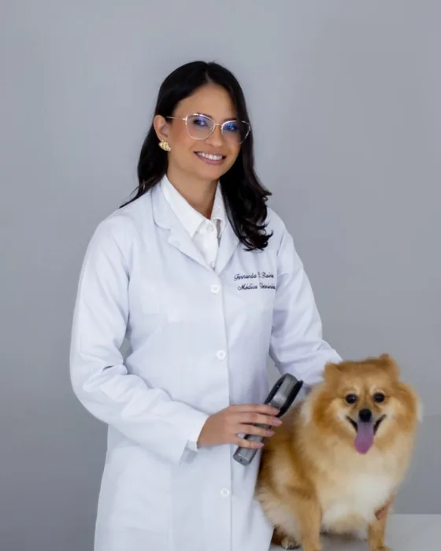
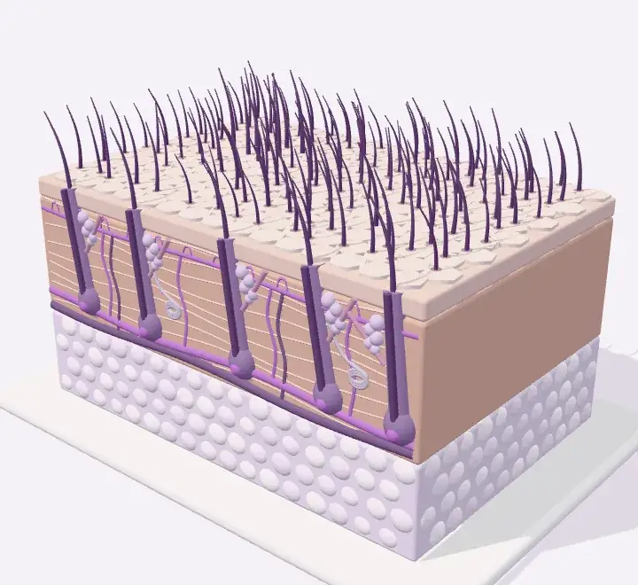
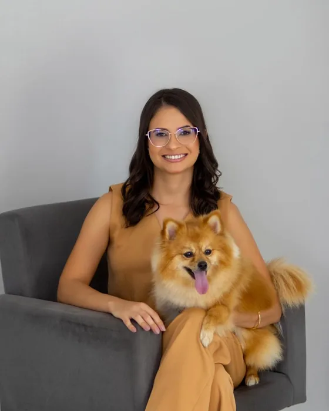

Dermatologia veterinária em Jales/SP Para uma pele saudável. E uma vida mais leve.
Cuidado atento com a pele, os pelos e as orelhas de cães e gatos. Consultas de cerca de uma hora, com exames feitos durante o atendimento e acompanhamento de cada caso.

- Um olhar atento para cada paciente
- Primeira consulta de cerca de uma hora
- Jales, interior de São Paulo
Alguns sinais pedem um olhar mais atento.
Você conhece a rotina do seu pet. Ao perceber mudanças, uma avaliação dermatológica ajuda a entender o que ele precisa.
Os sinais podem ter causas diferentes. A avaliação presencial orienta a investigação e os cuidados de cada paciente.
Coceira frequente
Quando coçar, morder ou esfregar a pele passa a fazer parte da rotina.
Falhas na pelagem
Queda intensa, áreas com menos pelos ou mudanças na aparência da pelagem.
Orelhas incomodando
Desconforto, secreção, cheiro forte ou episódios de otite que se repetem.
Lambedura persistente
Lambedura frequente das patas ou de outras regiões do corpo.
Feridas na pele
Lesões que persistem, demoram a cicatrizar ou precisam de acompanhamento.
Alterações que voltam
Quando o problema melhora, reaparece e o histórico precisa ser investigado.
O cuidado começa por entender.
Coceira, falhas na pelagem e feridas merecem atenção. Cada caso é investigado com calma, e o plano é montado para a rotina do pet e da família.
Alergias e otites
Coceira, lambedura das patas, dermatite atópica, alergia alimentar e otites que voltam. A investigação procura a causa, e os retornos ajustam o tratamento ao longo do tempo.
Queda de pelo e alopecia X
Falhas na pelagem e pelo que não volta a crescer, comuns no spitz alemão (lulu-da-pomerânia). A consulta descarta outras causas e apresenta opções como o microagulhamento e o peeling de diamante, quando indicados.
Feridas e recuperação da pele
Investigação do que impede a cicatrização e, conforme a avaliação e a indicação clínica, sessões de fotobiomodulação e terapia fotodinâmica como apoio ao tratamento.


O que o microscópio mostra
Citologias e raspado de pele são feitos durante o atendimento, e o resultado é conversado na hora. O tricograma entra quando o caso pede.

Citologia de orelha
Feita durante a consulta
Uma amostra do ouvido vai à lâmina e ao microscópio. Mostra fungos, bactérias e ácaros como o Otodectes cynotis, que causa a sarna de orelha (na imagem).

Raspado de pele
Feito durante a consulta
A raspagem leve da pele procura ácaros ao microscópio, como o Demodex da demodicose (na imagem) e os agentes de outras sarnas.

Tricograma
Quando o caso pede
Alguns pelos são retirados e observados ao microscópio para avaliar a raiz e a haste. Ajuda a investigar queda de pelo, falhas na pelagem e lambedura excessiva.
Também na consulta, conforme o caso: otoscopia, lâmpada de Wood e citologia de pele.
Ver exames e tratamentosA pele por dentro
Role a página e acompanhe, numa maquete 3D da pele do cão e do gato, o que acontece em cada problema que a Dra. Fernanda investiga na consulta.
Oito capítulos: como a pele é feita, dermatite atópica e alergias, sarnas, piodermite, dermatofitose, alopecia X, feridas e otites.
A maquete é didática: ácaros, bactérias e fungos aparecem muito maiores do que são.


Prazer, sou a Dra. Fernanda Rainho.
Encontrei na dermatologia veterinária a oportunidade de unir o conhecimento, a dedicação e o cuidado individualizado com cada paciente. Por trás de cada alteração na pele existe uma história que precisa ser investigada.
Meu atendimento valoriza a investigação cuidadosa, a medicina baseada em evidências e a participação do tutor em cada etapa.
Meu objetivo é cuidar da pele e também do bem-estar, da saúde e da relação tão especial que existe entre cada pet e sua família.
- Médica-veterinária, CRMV-SP 53.453
- Pós-graduação em Dermatologia Veterinária, Ufape, 2025
- Formação em microagulhamento e peeling de diamante para alopecia X
- Formação em fotobiomodulação e terapia fotodinâmica
Da primeira conversa ao acompanhamento.
A primeira consulta dura cerca de uma hora e acontece somente com hora marcada.
Entender a história
Conversamos sobre a rotina, os sinais observados e os cuidados e tratamentos já realizados.
Investigar com atenção
Pele, pelos e orelhas são avaliados, e os exames são definidos conforme a necessidade de cada caso.
Cuidar em parceria
Você recebe as orientações do plano de cuidado e os próximos passos do acompanhamento.
Antes da consulta: três dias sem banho
O banho recente remove da pele o material que precisa ser examinado. Informe a data e veja o dia do último banho.
Conte quatro dias para trás a partir da data da consulta. Para uma consulta na sexta-feira, o último banho é na segunda-feira; assim o pet passa terça, quarta e quinta sem banho.
Se o pet usa algum xampu ou tratamento prescrito, confirme o preparo pelo WhatsApp antes de mudar a rotina.
O que dizem os tutores
Avaliações deixadas no perfil da Dra. Fernanda no Google, sem edição.
“Profissional maravilhosa, atenciosa e cuidadosa. Muito paciente para tirar as dúvidas e explicar com clareza!”
Beatriz Fernanda SilvaAvaliação no Google
“Excelente profissional! A Fernanda é muito atenciosa, dedicada e ama o que faz. O consultório é organizado e a experiência foi ótima. Recomendo fortemente!”
Mauro MatsukawaAvaliação no Google
“Uma excelente profissional e me atendeu rapidamente e ajudou a cuidar do meu pet com muito amor e carinho. Super recomendo”
Jorge VedelagoAvaliação no Google
Dúvidas antes de agendar
O que os tutores mais perguntam antes da primeira consulta.
A Dra. Fernanda atende cães e gatos?
Sim. O atendimento dermatológico é para cães e gatos, com avaliação da pele, da pelagem e das orelhas.
Quanto tempo dura a consulta?
Em média, uma hora. Esse tempo permite conversar sobre o histórico, examinar o pet, fazer os exames necessários e orientar os próximos passos.
Posso dar banho antes da consulta?
O ideal é que o pet passe os três dias anteriores à consulta sem banho, para não remover da pele o que precisa ser examinado. Se ele usa algum xampu ou tratamento prescrito, confirme o preparo pelo WhatsApp antes de mudar a rotina.
O que devo levar?
Os exames anteriores e os nomes, as receitas ou as embalagens dos medicamentos e produtos que o pet já usou. Fotos da evolução das alterações também podem ajudar a contar o histórico.
Quanto custa a consulta?
O valor atualizado e as formas de pagamento são informados no agendamento, pelo WhatsApp (17) 99616-2379.
Preciso agendar?
Sim. As consultas acontecem somente com hora marcada, em Jales/SP. Segunda a sexta, das 8h às 17h30. Sábado, das 8h às 12h.
Mais conforto para o seu pet.
E mais tranquilidade para você. Consultas com hora marcada, em Jales/SP.
Agende pelo WhatsApp
Preencha os campos e a conversa abre com a mensagem pronta.
- Endereço
- Av. Francisco Jalles, 1500, Lot. Avenida
Jales/SP, CEP 15703-200
Como chegar - Horário
- Segunda a sexta, das 8h às 17h30. Sábado, das 8h às 12h.